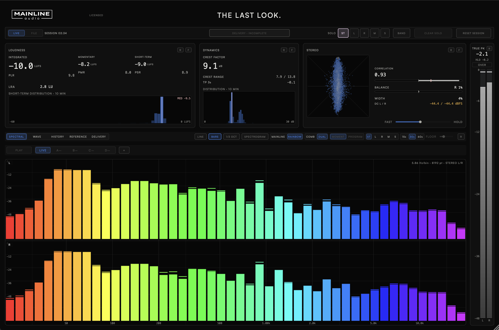

Mainline Audio
Metering & Analysis
Complete metering and analysis for final mix/master decisions.
Available Now · Introductory Price
$99
Regular price $149

Loudness, dynamics, and stereo image in one read — integrated and short-term LUFS, loudness range, crest factor, and correlation.
True peak, clipping, inter-sample overs, and DC offset, flagged before you export.
Load a reference file — including MP3 — and switch between it and your own mix to judge level and balance side by side.
Trend graphs for loudness, range, crest factor, and correlation over the length of the session, not just an instantaneous reading.
Version 1.0.0 · Release notes →
Instantaneous readings alongside rolling distributions, not just a single number that hides what the session actually did.
A full spectral analyzer alongside the metering — not a second plugin to switch to.
Built around comparison — your mix against a reference, one pass against another, this section against the rest of the record.
| Parameter | Detail |
|---|---|
| Loudness Metrics | Integrated / Short-Term / Momentary LUFS · LRA · PLR · PMR · PSR |
| Dynamics & Stereo | Crest Factor · Crest Range · Correlation · Balance · Width · DC Offset |
| True Peak | Dedicated meter with hold & over indication |
| Analysis Views | Spectral · Wave · History · Reference · Delivery |
| Spectral Display | Line / Bars / 1/3-Octave / Spectrogram |
| Reference File Support | Common audio formats, including MP3 |
| Demo | 14 days, full-featured |
| Formats | AU / VST3 / Standalone |
| Platform | macOS · Apple Silicon & Intel (Universal) |
AU & VST3 & Standalone · macOS · Apple Silicon & Intel
Join the List
Complete metering and analysis for final mix/master decisions — loudness, dynamics, stereo image, delivery checks, and reference-file comparison in one plugin.
Yes — The Last Look is available now.
AU, VST3, and Standalone on macOS (Apple Silicon & Intel, Universal). AAX / Windows are not currently supported.
Up to 2 computers that you own or control. Deactivate a machine at any time to free up an activation.
Yes. A fully functional 14-day demo — the same AU/VST3/Standalone installer as the paid version — is available with no feature restrictions. Get it through the free demo checkout above; you'll receive download access by email. Once installed, choose Start 14-Day Demo when you open The Last Look. No payment or license key required.
The Last Look checks once, shortly after you open it, for a newer stable version. If one is available, an UPDATE AVAILABLE badge appears; clicking it opens the release notes. The checker only reads the public version manifest—it never downloads or installs software and does not transmit license, project, or usage data. If the check cannot be completed, nothing appears.